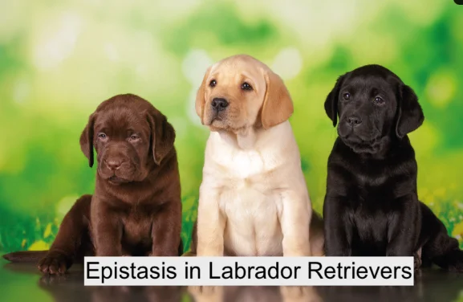
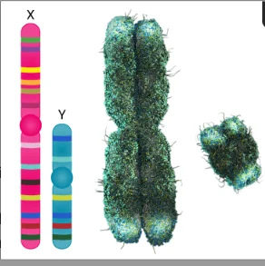
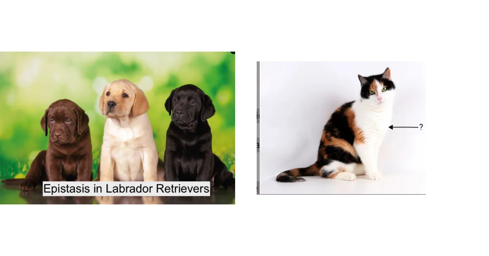
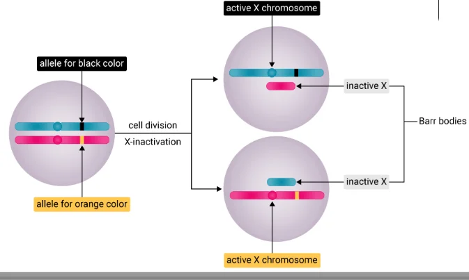
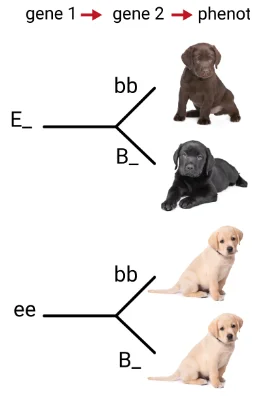
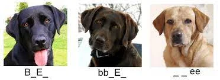
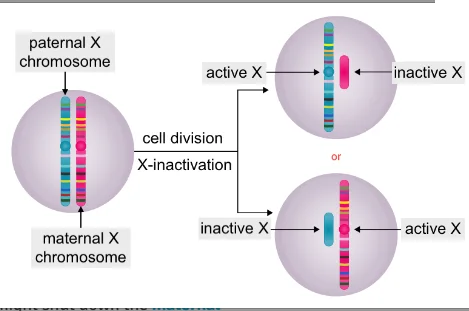
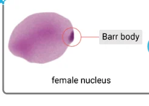

Epistasis and X Inactivation
Labrador coat colour · calico cats · dosage compensation
 UAE NATIONAL CHARTER · الميثاق الوطني
UAE NATIONAL CHARTER · الميثاق الوطنيMeet your UAE Values Team
Five friends will coach you through today's hidden-genes mission. Tap a character to discover their job today!
Lesson map · 45 minutes · tap any activity
Objectives, success criteria & key words
Describe epistasis and X inactivation.
- Foundation: I can define epistasis and X inactivation and give an example of each.
- Secure: I can work out Labrador coat colours from genotypes and explain the calico pattern.
- Advanced: I can explain the 9 : 3 : 4 ratio and why calico cats are almost always female.
Starter + attendance on the LMS

- Take attendance on the LMS (Almanhal) and settle in your seat.
- Recap last lesson: play the multiple allele and codominance game.
- Recall: which term best describes the inheritance of rabbit fur colour? (C > cch > ch > c)
- Then answer the true/false questions on the next slide on your own.
Pre-assessment: what do you already know?

Hook: a yellow puppy and a calico cat

Two mysteries…
1. Two black Labradors have a litter with black, chocolate and yellow puppies.
2. A calico cat has orange, black and white patches, and calico cats are almost always female.
2. Females have two X chromosomes. What if a different X works in different cells?
3. Why might a male cat not have both colours?
Video: epistasis and X inactivation (narrated, 2 min 23 s, subtitles)
Activity 1: epistasis or X inactivation?
Does each feature belong to Epistasis or X-inactivation? Tap to choose, then check.

Activity 2: the paint machine and the two radios (the unconventional version)
Epistasis = a paint machine. Gene B chooses the paint colour (black or chocolate). Gene E is the machine's power switch. If the switch is off (ee), no dark paint comes out at all, and the dog is yellow, whatever paint was chosen.
X inactivation = two radios. A female cell has two X "radios" playing. To avoid double volume, one radio is turned off in each room (cell), chosen at random. Different rooms play different songs: the calico patchwork!
Epistasis occurs when two different genes interact to affect a single trait: one gene hides the effect of a second gene, or modifies its expression. Female mammals have two X chromosomes; to avoid a double dose of X genes, one X is turned off in each cell, a process called X inactivation or dosage compensation. The inactive X becomes a Barr body.
Textbook: epistasis in Labrador retrievers

Labradors can be black, chocolate brown or yellow. Gene 2 (B) controls the colour: B = black, b = chocolate. Gene 1 (E) controls the expression of gene 2: with at least one E, the B and b alleles show; with ee, the coat is yellow.
Activity: which coat colour?
Predict the coat colour for each genotype, then tap to flip. Which 3 are yellow? Which 2 are chocolate? Which 4 are black?

Textbook: sex chromosomes and X inactivation


Human body cells have 46 chromosomes in 23 pairs: pairs 1–22 are autosomes, pair 23 are the sex chromosomes. Females (XX) have two X chromosomes, males (XY) only one. To avoid a double dose, one X in each female cell is turned off: X inactivation (dosage compensation). It is random and happens during embryonic development. The inactive X becomes a Barr body, first seen by Canadian scientist Murray Barr in calico cat cells in 1949.
Simulation: Labrador breeder · a 16-box Punnett square
Simulation: grow a calico cat · random X inactivation
The fur-colour gene is on the X chromosome: XO = orange, XB = black. Press Grow embryo to divide the cells. In each early cell, one X is switched off at random, and all its daughter cells keep the same choice.
Simulation: Barr body counter
What is the rule for the number of Barr bodies?
Lab: make your own calico cat (coin flip)
- Your cat is female XOXB. For each cell, flip the coin.
- Heads: XB is switched off → colour the cell orange. Tails: XO is switched off → colour it black.
- Count the orange and black cells. Compare your cat with another pair's cat.
| Result | Your answer | Question | Your answer |
|---|---|---|---|
| Orange cells | about 8 | Black cells | about 8 |
| Expected ratio | about 1 : 1 | Same as another pair? | no: random each time |
| Male XOY cat? | all orange | What is the coin? | random X inactivation |
Formative check
Tap an answer. Wrong? Read the hint and try again!
Put the steps in order: how a calico coat forms
Tap the steps from first to last. Tap a numbered one to undo.
Epistasis and X inactivation worksheet (1/2)
B. The inactive, darkly stained X chromosome
C. Switching off one X to balance X genes
D. Chromosome pairs 1 to 22
E. Chromosome pair 23 (X and Y)
Epistasis and X inactivation worksheet (2/2)
| Statement | Which one? |
|---|---|
| yellow Labrador retrievers | |
| a Barr body in female cells | |
| helps explain the coat of a calico cat | |
| a modified 9 : 3 : 4 ratio | |
| something is hidden or not expressed | |
| random, early in embryo development |
Explain why calico cats (orange and black patches) are almost always female.
✓ The orange/black fur gene is on the X chromosome, so a calico must have two X chromosomes (XOXB).
✓ In each female cell one X is randomly inactivated, so some patches express orange and others black.
✓ Males (XY) have only one X, so all their cells make the same colour (rare XXY males are the exception).
Main activity: choose your level · Green · Blue · Orange
Green · Mandatory ★
- Which could be the genotype of a chocolate Labrador: Eebb, EEbb, eeBb, EEBB?
- What is the name of the process that makes one X inactive in female mammals?
1. Eebb and EEbb.
2. Dosage compensation (X inactivation).
Blue · Less mandatory ★★
- Test cross: EeBb × eebb. Give the phenotype ratio.
- Explain why the inactive X looks like a dark spot (Barr body) in a female nucleus.
1. EeBb, Eebb, eeBb, eebb → 1 black : 1 chocolate : 2 yellow.
2. The inactive X is tightly condensed (packed), so it stains darkly.
Orange · Optional ★★★
- Explain why EeBb × EeBb gives 9 : 3 : 4, not 9 : 3 : 3 : 1.
- A male calico cat is found. Suggest his sex chromosomes and explain.
1. The 3 eeB_ and 1 eebb dogs are all yellow because ee masks B, so 3 + 1 = 4 yellow.
2. XXY: two X chromosomes (XOXB), one randomly inactivated in each cell.
Summative assessment: Gene Detective quiz
Plenary: both mysteries solved!
1. The yellow puppy: both black parents were EeBb. A puppy that inherits ee cannot deposit dark pigment, so epistasis hides the B gene and the puppy is yellow (9 black : 3 chocolate : 4 yellow).
2. The calico cat: the orange/black gene is on the X. A female XOXB randomly switches off one X in each cell (X inactivation), giving orange and black patches. Males have one X, so they cannot show both colours.
Foundation: I can define epistasis and X inactivation with examples.
Secure: I can work out Labrador colours and explain the calico pattern.
Advanced: I can explain 9 : 3 : 4 and why calico cats are female.
I can explain what a Barr body is.
Which value did you show today?
Tap the character whose value you showed in this lesson. Then tell your partner one real example!
Switch on your potential
Some genes stay quiet, some genes shine. You get to choose which talents you switch on: practise them every day, and your own unique pattern will make the UAE proud!